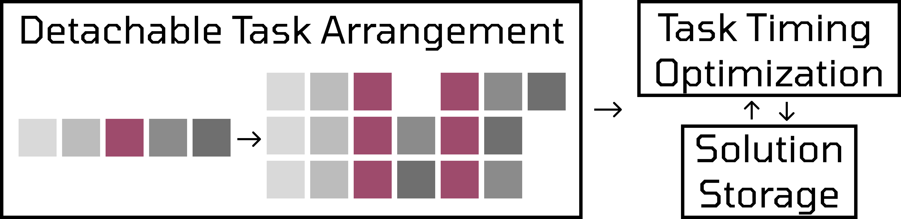

Efficient Timing-Aware Planning
via Detachable Task Modeling
Abstract
Robots operating in household environments often encounter tasks that include mandatory waiting periods. During activities such as heating, boiling, or cooking, the robot remains idle while time continues to elapse. We introduce the concept of detachable tasks to capture such waiting intervals, enabling them to be separated from active execution and interleaved with other tasks. Building on this concept, we propose Timing-Aware Detachable-task planning (TAD) that transforms an off-the-shelf task plan into a timing-aware plan with explicit start and end times, enabling efficient single-robot execution by overlapping compatible tasks during waiting intervals. TAD also reuses previously computed solutions across planning steps, reducing the cost of timing-aware optimization. We evaluate TAD in MuJoCo simulation and real-world household scenarios with the AI Worker dual-arm manipulator, achieving over 28.7% improvement in overall time efficiency compared to a baseline planner.
Proposed Method

Our framework consists of three stages.
- Detachable Task Arrangement stage generates task timing variables and enumerates feasible timing-variable combinations by considering detachable tasks.
- Task Timing Optimization stage determines the optimal task timing by solving an optimization problem under the defined timing constraints for each combination.
- Solution Reuse stage reduces computational cost by reusing previously obtained solutions when parts of the task sequence and timing constraints are identical.
Result Videos
Plan Execution Visualize
Real-World
Make toast soft, give me some water and wipe the desk
Make toast chewy, give me some water and wipe the desk
Make toast crispy, give me some water and wipe the desk
Simulation
Wipe a desk and make chewy toast
Wipe a desk, make chewy toast, and heat the food
BibTeX
Citation information will be available after the paper is released.